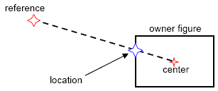
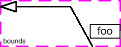

Connections figures are used to display a line between two points.
The Connection interface extends IFigure. The provided PolylineConnection
implementation can be used in most cases. The source and target endpoints of a
connection are each defined using a ConnectionAnchor. These
endpoints, along with any other points on the connection, are set by the
connection's ConnectionRouter.
Usually every connection in a drawing has the same router instance. Connections
with common endpoints can share anchor instances as well.
Connections are created and added just like any other figure. Usually, connections should be displayed above other elements of a drawing using Layers. Unlike normal figures, you must not set the bounds of a connection. Instead, you must provide the source and target anchors and let the connection router calculate the connection's points. The connection then determines its own bounding box.
A connection has a simple router by default - one that can connect the source and target anchors. But additional routers are available and can be set on the connection. Some routers can handle constraints for the connection such as a list of bendpoints through which the connection passes. Note that when setting a routing constraint on a connection, you must first set the router which will use that constraint.
A convenient way to share the router with all connections and to
place connections above the drawing is to
use a ConnectionLayer. The layer has a connection router property
which it shares with every child that's a connection. You can update
this property and easily change every connection's router at once.
A connection always has a router and it must set at least two
points on the connection: the source and target endpoints. By default, or when
set to null, the connection's routing will be performed by an internal default
router. The ends are placed with the help of anchors. An anchor is a fixed or
calculated location, usually associated with some figure. For example, the ChopboxAnchor finds the
point at which a line going to the reference point intersects a box, such as the
bounds of a figure. The
reference point is either the anchor at the opposite end, or a bendpoint or some
other point nearest to the anchor. Anchors notify the connection when their
anchor points has changed.

A ChopboxAnchor calculates the connection endpoint by finding the reference's
intersection with a rectangle
The router calculates the endpoints and any other points in the
middle of the connection. It then sets the points on the connection by calling
setPoints(PointList). The connection's existing point list can be reused to
reduce garbage, but the points must be set on the connection anyway so that it
knows about any changes made.
Like most figures, PolylineConnection supports the addition of children. The children might be
arrowheads or labels that decorate the connection. The placement of each type of
decoration can vary, so a
DelegatingLayout
is used to delegate to each
child's constraint object, a Locator.
PolygonDecoration can be used to create render a rotatable shape at the end of a
connection. The end of a connection can be labeled by adding a Label with a
ConnectionEndpointLocator. A connection will extend its bounds beyond what would
be required to paint just the polyline.

A connection with 2 child decorations
Connections extend the process of validation and layout to include routing. Since layout is the process of positioning children, routing must come first. This allows a child's locator to operate on the connection's newly-routed points.
During the validation step, the connection must remember its old bounds and determine its new. It then must damage the appropriate regions on the update manager. The provided implementation does all of these things for you. It also requests revalidation according to certain events specific to connections, such as an anchor moving or the router changing.